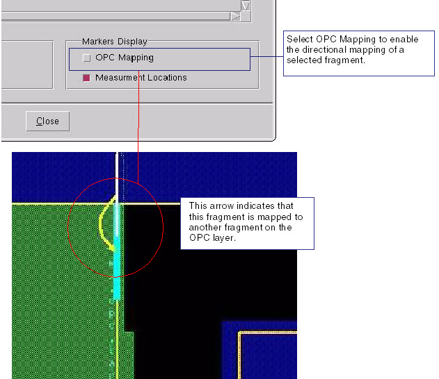

For processes
that require multiple masks to create a desired image (as in phase-shift
masks or double-exposure masks), use correction layers.
Correction layers are special layers containing
edges that are moved during OPC. During the OPC process with a correction
layer, fragments on a correction layer are mapped to fragments on
the opc layer. This means that EPEs are effectively measured from
one layer and are applied to adjust fragment movements on the other
layer.
Procedure
- Run OPC
from the RET Flow Tool with the Fragment Markers option enabled.
- You can view OPC mapping using
one of the following methods:
In the RET Flow Tool,
click the Frag button
following the OPC run to display the fragments. If there is a correction
layer present, Calibre WORKbench automatically displays the OPC
mapping as directional arrows (see Figure 1).
Figure 1. OPC Mapping Example
You can also view the
mapping of individual fragments by clicking the OPC Mapping option
(see Figure 2) in the Fragment Information dialog
box (see “Viewing Fragment Information” for information).
Figure 2. Individual Fragment Mapping